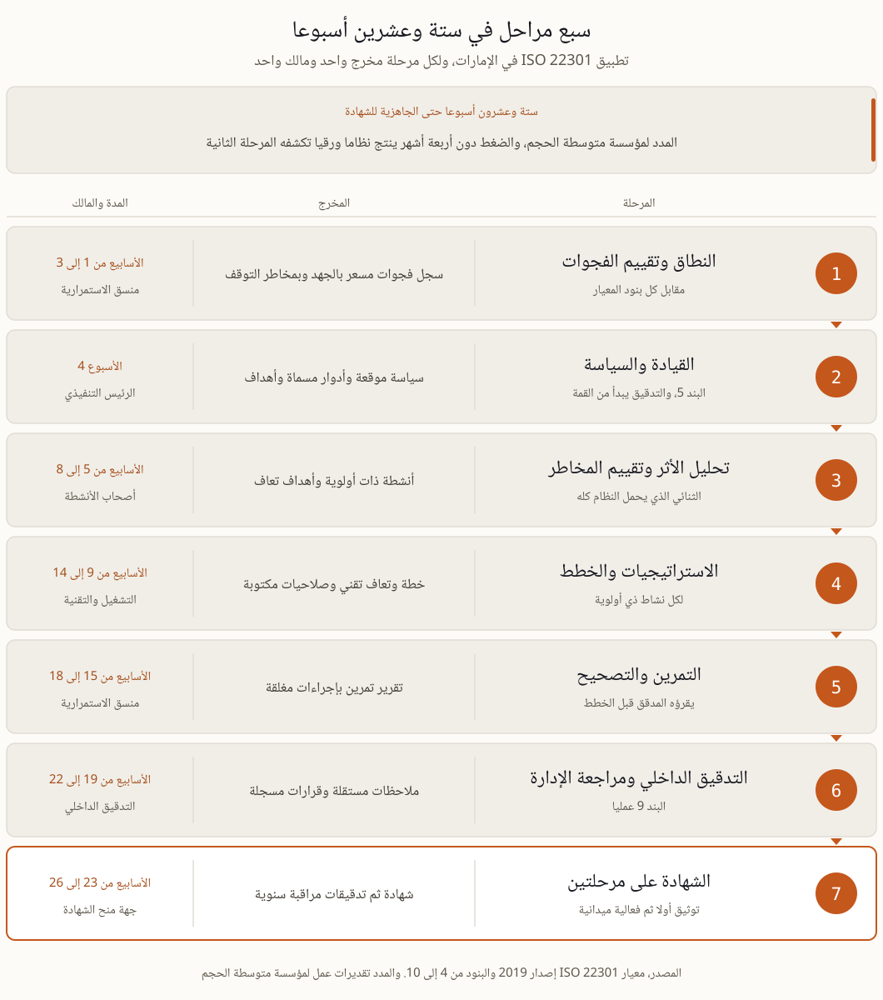

تطبيق ISO 22301 في الإمارات، سبع مراحل ومالك لكل مرحلة
تطبيق ISO 22301 مشروع إداري لا مشروع وثائق. سبع مراحل، ستة وعشرون أسبوعا لمؤسسة متوسطة الحجم، ومالك مسمى ومخرج واحد ملموس لكل مرحلة، ثم تدقيق منح على مرحلتين.
ثلاثة قرارات قبل الأسبوع الأول
يبدأ أغلب المشاريع بسؤال خاطئ، وهو متى نحصل على الشهادة. والسؤال الذي يوفر شهورا كاملة هو ماذا سنضع داخل النطاق ولماذا. القرار الأول حدود نظام إدارة الاستمرارية، أي الكيانات والمنشآت والأنشطة التي يغطيها، فكل كيان إضافي يضاعف المقابلات والخطط والأدلة، والبدء بالنواة الحيوية ثم توسيع النطاق في تدقيقات المراقبة خيار مشروع تماما ولا يعيبه شيء. والقرار الثاني هو هل تصممون الوثائق للمعيارين معا من اليوم الأول، فالمعيار الوطني في الإمارات يحاكي هيكل ISO 22301 عمدا، والفرق بينهما مشروح في صفحتنا عن المقارنة وفي صفحة المعيار الوطني، ويكفي هنا أن تعرفوا أن الترقيع بعد سنة يكلف ضعف التصميم المزدوج من البداية. والقرار الثالث من يقود المشروع يوميا، ومنسق واحد قوي متفرغ نصف وقته يتفوق على لجنة من اثني عشر عضوا لا يملك أحدهم وقتا.
التسلسل الذي ينجح، سبع مراحل
الترتيب ليس شكليا، لأن كل مرحلة تنتج مدخلات المرحلة التي تليها، وقلبها يعني إعادة العمل مرتين. والمدد أدناه مدد عمل فعلي لا مدد انتظار.
النطاق وتقييم الفجوات، الأسابيع 1 إلى 3. حددوا ما يغطيه النظام من كيانات ومنشآت وأنشطة، وقيسوا الوضع الحالي مقابل كل بند من بنود المعيار. المخرج سجل فجوات مسعر بالجهد وبمخاطر التوقف، لا قائمة ملاحظات نوعية.
القيادة والسياسة، الأسبوع 4. سياسة قصيرة موقعة، ومساءلة باسم شخص لا باسم لجنة، وأهداف قابلة للقياس. البند 5 صغير على الورق وحاسم في التدقيق، لأن مقابلات الشهادة تبدأ من القمة.
تحليل الأثر وتقييم المخاطر، الأسابيع 5 إلى 8. هذا الثنائي يحمل النظام كله. منهجية تحليل الأثر التي تبدأ بالمال مشروحة في صفحتها المستقلة، ومنها تشتق أهداف التعافي لكل نشاط ذي أولوية.
الاستراتيجيات والخطط، الأسابيع 9 إلى 14. استراتيجية استمرارية لكل نشاط ذي أولوية، ثم الخطة الموثقة والتعافي التقني وهيكل الساعات الأولى بصلاحية مكتوبة لا بعرف متوارث.
التمرين والتصحيح، الأسابيع 15 إلى 18. اختبار واقعي بتوقيتات وملاحظات، ثم إصلاح ما انكسر وتوثيق الحلقة كاملة. المدققون يقرؤون تقارير التمارين قبل أن يقرؤوا الخطط.
التدقيق الداخلي ومراجعة الإدارة، الأسابيع 19 إلى 22. البند 9 عمليا، نظرة مستقلة من التدقيق الداخلي، ثم مراجعة قيادية وقرارات مسجلة بتواريخ وأسماء.
الشهادة، الأسابيع 23 إلى 26. المرحلة الأولى جاهزية التوثيق، والمرحلة الثانية الفعالية ميدانيا من مقابلات وأدلة وسجل تمارين، ثم تدقيقات مراقبة سنوية.
الجدول الواقعي الإجمالي لمؤسسة متوسطة نحو ستة أشهر حتى الجاهزية للشهادة. والضغط دون أربعة أشهر ينتج عادة نظاما ورقيا تكشفه مقابلات المرحلة الثانية خلال ساعتين.

المراحل السبع ومخرج كل مرحلة ومالكها، على مدى ستة وعشرين أسبوعا.
من يفعل ماذا، وأين تتعثر المشاريع
توزيع الأدوار هو الفرق بين مشروع يمشي ومشروع يتوقف عند أول إجازة صيفية. الرئيس التنفيذي يوقع السياسة ويحضر المراجعة الإدارية بنفسه، وحضوره ليس مجاملة لأن المدقق سيسأله عن الأهداف وسيقارن جوابه بالوثيقة. ومنسق الاستمرارية يدير التقويم وحزمة الأدلة ويطارد المتأخرين، ولا يكتب الأرقام نيابة عن أحد. وأصحاب الأنشطة يملكون أرقامهم، فهم من يقدر كلفة يوم توقف ومن يوقع على أهداف التعافي. والتقنية تملك التعافي التقني وتجربه فعلا لا على الورق. والتدقيق الداخلي يبقى مستقلا عن البناء حتى يصح تدقيقه، وهذا هو منطق الخطوط الثلاثة في أبسط صوره. أشيع سبب للتعثر أن المنسق يملأ استمارات تحليل الأثر بنفسه توفيرا للوقت، فتسقط الأرقام في أول مقابلة حين يسأل المدقق صاحب النشاط عن رقمه فلا يعرفه.
ما الذي يحرك الكلفة، وكيف تضبطونه
اتساع النطاق. كل كيان ومنشأة إضافية تضاعف المقابلات والخطط والأدلة. اعتمدوا النواة الحيوية أولا ووسعوا النطاق في تدقيق المراقبة التالي.
مستوى النضج الحالي. قدرة تعاف تقني عاملة وتحليل أثر حديث يوفران شهورا. نفذوا تقييم الفجوات قبل بناء الميزانية لا بعدها.
التوافر الداخلي. وقت أصحاب الأنشطة أندر المدخلات وأصعبها جدولة. جمعوا المقابلات في أسابيع مركزة، ومنسق واحد قوي يتفوق على لجنة كبيرة.
مواءمة المعيارين. مصطلحات المعيار الوطني وإضافات تقييم الموردين تكلف قليلا إن صممت مرة واحدة، وتكلف كثيرا إن أضيفت لاحقا. صمموا الوثائق بمطابقة المعيارين منذ البداية.
كيف يجري تدقيق منح الشهادة
يجري التدقيق على مرحلتين مفصولتين بأسابيع. المرحلة الأولى مراجعة توثيق، يقرأ فيها المدقق السياسة والنطاق وتحليل الأثر والخطط وسجلات المراجعة، ويخرج بقائمة نقاط تعالج قبل الزيارة التالية. والمرحلة الثانية هي التدقيق الحقيقي، ميدانيا وبالمقابلات، وموضوعها ليس هل الوثيقة موجودة بل هل النظام يعمل. يسأل المدقق صاحب نشاط عن هدف تعافيه، ويطلب تقرير آخر تمرين مع الإجراءات المغلقة وتواريخ إغلاقها، ويتتبع ملاحظة واحدة من نشأتها إلى قرار الإدارة بشأنها. ثم تصدر الشهادة لثلاث سنوات وتليها تدقيقات مراقبة سنوية، وهذه هي النقطة التي تتضح فيها الفوارق، فالمؤسسة التي بنت نظاما حيا تمر بها في يومين، والتي جمعت ملفا قبل الزيارة تعيد المشروع من أوله. وترتيب حزمة الأدلة ورواية النظام أمام المدقق مهارة تعلم، وقياس الامتثال بها يختلف عن قياسه بعدد الصفحات.
ستة أخطاء تتكرر في مشاريع المنطقة
شراء قالب وثائق جاهز وملؤه بأسماء الشركة. المدقق يميز القالب من أول صفحة، والمقابلة تكشف الباقي.
تأجيل التمرين إلى ما قبل التدقيق بأسبوعين. التمرين مصمم ليكسر شيئا ويترك وقتا لإصلاحه، وتمرين بلا ملاحظات ليس تمرينا.
نطاق يشمل كل الشركة في المحاولة الأولى، فيتضخم العمل ويتأخر كل شيء لأجل فرع لا يمثل خطرا حقيقيا.
أهداف تعاف يضعها قسم التقنية وحده. الهدف قرار عمل يوقعه صاحب النشاط، والتقنية تنفذه لا تختاره.
تدقيق داخلي ينفذه نفس من كتب الوثائق. هذه ملاحظة شبه مؤكدة في المرحلة الثانية، والحل استعارة مدقق من كيان شقيق أو من الخارج.
اعتبار الشهادة خط النهاية. الشهادة بداية دورة سنوية من تمرين ومراجعة وتحديث، وأول تدقيق مراقبة يكشف من فهم ذلك ومن لم يفهم.
أسئلة تسبق قرار البدء
هل الشهادة إلزامية في الإمارات؟ لا، فهي اختيارية. لكن المناقصات والشركات الأم والعملاء الدوليين يطلبونها، وهي للقطاعات المنظمة دليل قوي نحو توقعات المعيار الوطني وتوقعات المصرف المركزي، وأي متطلب يلزمكم فعلا يعتمد على قطاعكم.
هل نستطيع التطبيق دون مستشار؟ نعم، بقائد داخلي كفء ووقت قيادي حقيقي. والعون الخارجي يسدد ثمنه في ثلاثة مواضع، انضباط منهجية تحليل الأثر، والضغط المستقل في التمرين، والمراجعة قبل الشهادة أي عين مدقق قبل المدقق.
كم تكلف الشهادة؟ رسوم جهة المنح تعتمد على عدد الموظفين والمواقع، والتكلفة الأكبر هي الجهد الداخلي. والترتيب الصادق للميزانية تقييم فجوات أولا، ثم تسعير المعالجة من السجل، ولا يصح العكس أبدا.
أيهما أولا، ISO 22301 أم المعيار الوطني؟ ابنوا مرة واحدة وطابقوا الاثنين. إن كان عملاؤكم محليين وحكوميين فقدموا مواءمة المعيار الوطني، وإن كان الاعتراف الدولي هو المحرك فقدموا الشهادة الدولية. النظام تحتهما واحد.
بناء نظام يصمد أمام مدقق ومجلس إدارة معا هو مادة برنامج ERGP، أول شهادة في حوكمة المرونة متاحة بالكامل باللغة العربية وبالإنجليزية أيضا. ست وحدات وستة مخرجات عملية ومشروع ختامي يناقش أمام ممتحن وشهادة قابلة للتحقق.